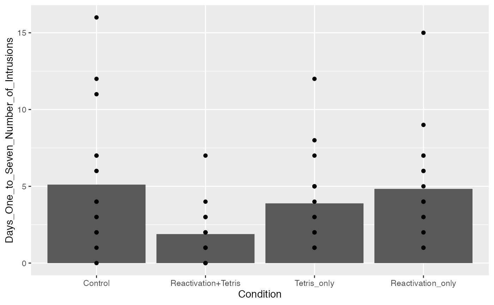

Lab4
Natalie Palmer
3/2/2022
Lab4.Rmd1.Use R to conduct a t.test and ANOVA on this data. Then use R to prove that the results of both analyses are the same. For example, prove that the p-values are the same, and prove that the F-value and T-value are related. (3 points)
library(tibble)
example_data <- tibble(Group = rep(c("A","B"), each = 5),
DV = c(2,4,3,5,4,7,6,5,6,7))
t_test <- t.test(DV~Group, var.equal=TRUE, data = example_data)
my_aov <- summary(aov(DV~Group, data = example_data))
t_test$p.value## [1] 0.003386143
my_aov[[1]]$`Pr(>F)`[1]## [1] 0.003386143## [1] TRUE
t_test$statistic## t
## -4.110961
my_aov[[1]]$`F value`[1]## [1] 16.9
t_test$statistic^2 == my_aov[[1]]$`F value`[1]## t
## FALSE
t_test$statistic^2## t
## 16.9
my_aov[[1]]$`F value`[1]## [1] 16.9## t
## TRUE- Look at the lab on ANOVA that I wrote for our undergraduate statistics OER lab manual https://crumplab.github.io/statisticsLab/lab-8-one-way-anova.html. That lab shows an example of obtaining data from a published paper in psych science where a one-factor ANOVA was used as a part of the analysis. Load the data, conduct the ANOVA, report a ggplot of the means, and use papaja to help you write a short results section reporting the ANOVA result. (3 points).
library(data.table)
library(readr)
Jamesetal2015Experiment2 <- read_csv("data/Jamesetal2015Experiment2.csv")## Rows: 72 Columns: 28## ── Column specification ────────────────────────────────────────────────────────
## Delimiter: ","
## dbl (28): Condition, Time_of_Day, BDI_II, STAI_T, pre_film_VAS_Sad, pre_film...##
## ℹ Use `spec()` to retrieve the full column specification for this data.
## ℹ Specify the column types or set `show_col_types = FALSE` to quiet this message.
View(Jamesetal2015Experiment2)
all_data <- fread("data/Jamesetal2015Experiment2.csv")
# re-labeling
all_data$Condition <- as.factor(all_data$Condition)
levels(all_data$Condition) <- c("Control",
"Reactivation+Tetris",
"Tetris_only",
"Reactivation_only")
library(ggplot2)
ggplot(all_data, aes(x=Condition, y=Days_One_to_Seven_Number_of_Intrusions))+
geom_bar(stat="summary", fun= "mean", position = "dodge")+
geom_point()
## Df Sum Sq Mean Sq F value Pr(>F)
## Condition 3 114.8 38.27 3.795 0.0141 *
## Residuals 68 685.8 10.09
## ---
## Signif. codes: 0 '***' 0.001 '**' 0.01 '*' 0.05 '.' 0.1 ' ' 1## [1] "$F(3, 68) = 3.79$, $\\mathit{MSE} = 10.09$, $p = .014$, $\\hat{\\eta}^2_G = .143$"A one-factor between-subjects ANOVA was used to examine the average for intrusive memories for the week from participants in each condition. The independent variables consisted of the intervention type of (no-task control, reactivation plus tetris, reactivation alone, and tetris alone). From the ANOVA performed, we found a main effect of Intervention type, \(F(3, 68) = 3.79\), \(\mathit{MSE} = 10.09\), \(p = .014\), \(\hat{\eta}^2_G = .143\).